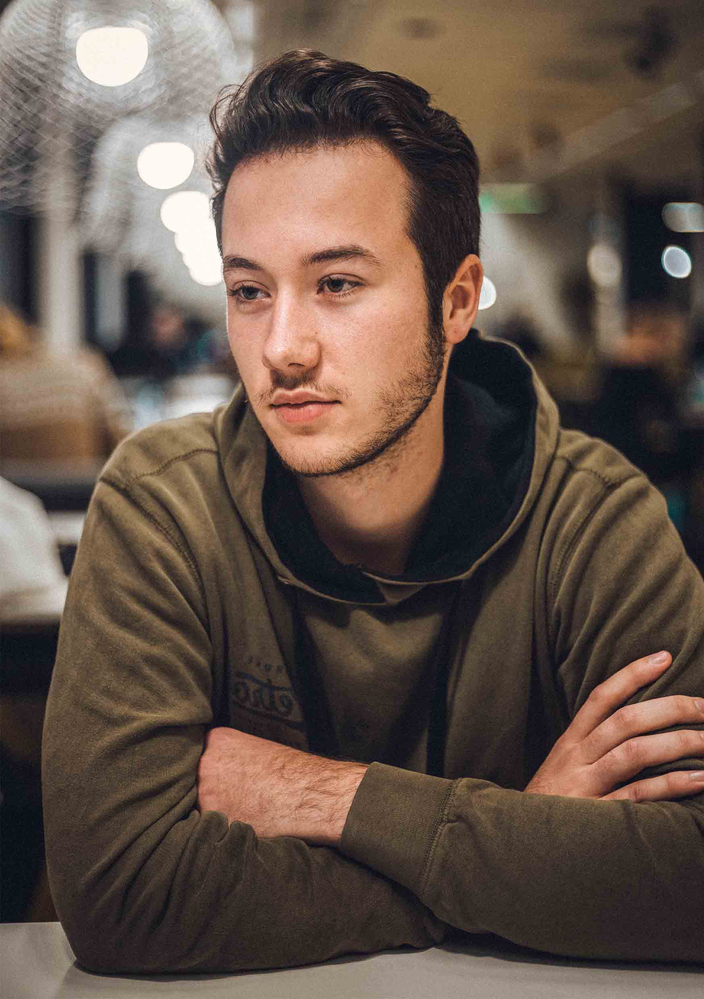

Roeland van Stee.
Ik ben Roeland van Stee, een tweedejaars CMD student op de HvA. Voor CMD heb ik het VWO gedaan op het Pieter Nieuwland College in Amsterdam.
Deze website weergeeft mijn opdrachten en interesses na meer dan een jaar CMD gedaan te hebben.
Na het eerste jaar liggen mijn interesses voornamelijk in:
- HTML/CSS
- Javascript
- Vormgeving
In mijn vrije tijd ben ik erg geïnteresseerd in muziek. Ik houd veel van bijvoorbeeld de Red Hot Chili Peppers, Vulfpeck, Anderson. Paak en Mac Miller. Zelf speel ik ook bas door de Red Hot Chili Peppers en ik vind het ook erg leuk om LP's te sparen.